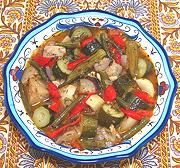

|
Türlü StewTurkey - Türlü | ||||
| Makes: Effort: Sched: DoAhead: |
7 w/rice **** 2-1/2 hrs Yes |
Often described as "Turkish Ratatouille", this delicious vegetable stew was adopted by Sephardic Jews driven from Spain, as It is similar to a Spanish Pisto. | |||
| Spanish Pisto is itself derived from the Moorish Albaronia. This recipe can easily serve as a vegetarian main dish, or can have meat added (see Variations). | |||||
|
------- 4 2 12 6 14 6 1 8 5 8 ------- 1/4 2 2 ------- 1 1/2 1/2 2 1/2 ------- 2 1 3/4 2 3 |
--- oz T oz oz oz oz # oz cl oz --- c T T --- t t T t t --- T T c T |
-- Vegetables Okra, small Vinegar Zucchini, small (1) Green Beans Tomatoes, ripe Peppers, sweet (2) Eggplant, thin (3) Onions Garlic Potatoes (4) -- Herbs (5) Parsley Dill Mint -- Seasonings Fenugreek Cinnamon Coriander seed Salt Pepper --------- Tomato Sauce (6) Vinegar (7) Water Bay Leaves Olive Oil, ExtV |
Prep - (1-1/4 hrs)
|
tmv_turlu1 170126 ctc112, sf100, moro240, tcio105 -
www.clovegarden.com
©Andrew Grygus - agryg@aaxnet.com - Linking to and
non-commercial use of this page is permitted.